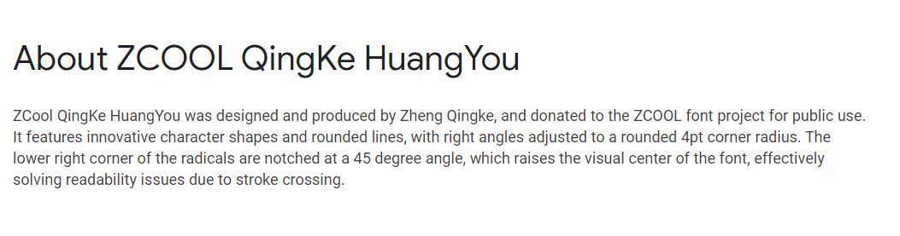

简介
为什么叫 WD-XL 滑油字？
“WD-XL” 的名字来源于某著名品牌润滑油，其中 WD 是原本品牌名称的前半部，XL 除了是原产品的罗马数字以外，也代表这个字体的目标。“滑油字”则就只是……又滑又油的字？
为什么要做这个字体？原版字体不好吗？
WD-XL 滑油字 是基于 站酷庆科黄油体 的字体进行繁体字补字，并且修整了标点符号及增加了中文排版所需要的符号（如汉语拼音及注音符号）。此外，本字体也改进了原字体的许多问题：

Google Fonts 上原字体的介绍如下：

但是如果详细查看，部分汉字其实并没有 45° 右下斜角。本字体已经统一了此特征，让全部汉字视觉效果一致：

WD-XL 滑油字 的西文部分也经过检查修整，确保其更适合西文排版。

额……我觉得让原作者改了就可以了啊。
原字体已经数年未更新。WD-XL 滑油字 除了修改问题以外，也聆听了繁体中文排版界的需求，为繁体中文排版进行了修改增删，制作了 WD-XL 黄油体 TC 版本。TC 版依据更适合印刷的传承字形进行参考及修改以匹配原字体风格。

嗯……还不错。
WD-XL 滑油字 还制作了汉语拼音、注音符号、白话字、台罗拼音的符号呢！你可以用这个字体来制作专业排版了！
| Hànyǔ pīnyīn | ㄓㄨˋ ㄧㄣ |
| Pe̍h-ōe-jī | Tâi-lô |
就这样？
未来 WD-XL 滑油字 将会尝试更多 OpenType 功能，敬请期待！
我需要付费吗？
不需要！WD-XL 滑油字 继承了 Google Fonts 版本站酷庆科黄油体的《SIL 开源字型授权》 (SIL Open Font License)，完全开源免费商用！详细授权请参考随附本字体的授权文件（简中译版参考）。
这些不同的字体版本是什么？
WD-XL 滑油字 提供了四种地域字体，即 SC、TC、JPS 和 JPN。SC 是简体中文字形，TC 是繁体中文字形，JPS 和 JPN 皆是日文字形（日文版目前是测试性质，但是这个字体本来就是测试用途啊～）。JPS 与 Adobe Std (JIS X 0208:1990) 字形相似，JPN 则与 Adobe StdN (JIS X 0213:2004) 字形相似。
我要怎样用这款字体呢？
请前往 GitHub 下载 WD-XL 滑油字 后安装即可。
立即下载 >
如果您是网页开发者，欢迎使用 Google Fonts 网页字体服务：
使用 Google Fonts >
或者
（繁中）
（日文）
也可使用中国大陆镜像：
ZeoSeven Fonts >
OpenType 功能
WD-XL 滑油字 已经为日常排版配置了多项 OpenType 功能；一起来看看吧！
简化设计：ss01
首先，最简单的东西开始：整修这奇葩的 X。（选择性哦）
西文标点符号：ss18
然后：中文标点符号（多数）一般上占一个汉字宽度，且置放中间，但西文标点一般是比例宽度（即根据字形宽度变化），因此影响了部分标点符号的显示使用。本字体在这里尝试一项功能：将 ss18 设置为西文标点，软件设置时自动替换全部相关字符。目前在此功能内置放了省略号、间隔号（U+00B7 MIDDLE DOT）、引号，以及部分音标。
中文标点符号：ss19/ss20
即使同样是中文用户，我们也把标点符号写在不同的位置。简体中文用户多数将标点符号置放在左下角，而多数繁体中文用户则将标点符号写在正中间。因此，本字体在 ss19 及 ss20 设置了不同的标点符号，让用户可以自由选择。
ss19：简体中文标点符号（置左下）。
ss20：繁体中文标点符号（置中）。
这些选项也会改变部分 ss18 调整的标点符号，例如间隔号及省略号。ss20（繁中标点）内也设置调整注音符号的音调大小以适配注音符号。
标点符号：变体选择器
Unicode 近年也为中文标点符号特别设置变体选择器（Variation Selectors，VS），让文本本体可以指定应该显示的字形。此功能并不属于 OpenType，但是因为其功能相似所以这边也简单介绍。使用变体选择器的方法是在标点符号后面加上 Unicode 指定的变体选择符。下面的示例皆标签为英文且关闭全部 OpenType 功能，VS01 行的每个标点符号后面紧随 U+FE00，而 VS02 行的每个标点符号后面紧随 U+FE01。
| VS01 |
、︀。︀！︀，︀．︀：︀；︀？︀“︀你们‘︀好吗’︀”︀ |
| VS02 |
、︁。︁！︁，︁．︁：︁；︁？︁“︁你们‘︁好吗’︁”︁ |
拼音系统：ccmp/dlig
好啦，来认真了。汉语拼音、台罗拼音和白话字皆用到了带标的拉丁字母，其中台罗拼音跟白话字都用了一些未编码的字符，因此本字体使用了 ccmp 来进行动态组字。此功能一般编辑软件会自动开启，用户无需担心。
| a̍ | Ô͘ | m̋ | n̄ | ú | È | Ň | ĭ |
| Ĕ | u̍ | ê | ő | Ī | Ḿ | Ù | Ǎ |
| ǒ | ĕ | i̍ | ô͘ | Ő | ū | ń | m̀ |
| ǘ | Ň | Ề | Ǖ | Ŝ | ü | ẑ | ŋ |
示例文字里面最后一排文字是汉语拼音专用标音，而第一至三排皆是台罗拼音/白话字共用字符。有注意最后一排混了个不速之客吗？
其实 ŋ 并不在 ccmp 功能内。ŋ 实际上在汉语拼音里是 ng 的缩写[来源]，因此不像上面的一个字母加一个组合附加音标。然而，ng 也无法贸然加入 liga 内，否则其他语言启动 liga 时也会受到影响。因此，本字体将 ng/NG 连字缩写置放于 discretionary ligatures⸺选择性连字内，让用户仍可轻易使用此连字，但是其他语言（如英语 -ing 词汇）不会受到影响。ẑ，ĉ，ŝ 分别是 zh，ch，sh 的简写，因为上述理由而同样设置于 dlig 内。此功能也需要用户手动选择。
| TÍNG Zhǎngdà | > | TÍNG Zhǎngdà |
标点符号⸺破折号：ccmp
中文破折号应当占两个汉字宽度，并且显示成连贯的一条横线，但是破折号一般上左右会有一些留白以避免跟文字打架。在 2.001 版及以前的版本，调用破折号的方式是透过使用 OpenType liga 连字功能将两、三个单独的破折号（U+2014 EM DASH）替换成一个联合的字形（U+2E3A TWO-EM DASH/U+2E3B THREE-EM DASH），但是在竖排时会出现间隔问题；此方法也无法处理无限长的破折号。2.100 版起，破折号转为使用 ccmp 来无限延伸。此功能默认开启，用户不需要修改当前文件即可享用最新的修改，但需注意尽量避免在符号之间加间距，否则仍会断开。
（看到上面五倍长的破折号中间的第三、四个连起吗？这个才是正确的中文破折号⸺U+2E3A。如果输入不来，仍旧可以使用两个 U+2014 代替。）
标点挤压：chws/vchw
专业中文排版会特别针对相连中文标点符号进行挤压，减少标点符号之间的空间让文本显得更加紧凑。本字体在 2.100 版加入了 OpenType 的新功能 chws 及 vchw，让用户可以选择是否挤压标点符号。chws 为横排标点挤压，vchw 为竖排标点挤压。标点挤压目前仅限于置左下式的标点（如简体中文和日文的逗句号）及括号；置中标点符号（如间隔号和繁体中文的逗句号）暂不挤压。
此功能在铬系（Chromium 系）浏览器 123 版起默认开启，用户不需要修改已有文件就能让文本看起来更加密布。
| 说：“你呢？” |
> |
说：“你呢？” |
| 论）、《文》。 |
> |
论）、《文》。 |
半宽标点：halt/vhal
为了方便进行标点挤压，字体已经设置了标点符号的半宽距离。该半宽标点符号的度量也单独放置在 OpenType halt（横排）/vhal（竖排） 功能内，也另外给 chws/vchw 不挤压的置中标点符号设置了半宽宽度。此功能会影响全部中文标点符号，请优先使用 chws/vchw 的标点挤压功能。
| 说：“你呢？” |
> |
说：“你呢？” |
| 论）、《文》。 |
> |
论）、《文》。 |
文字切换：smpl/trad
作为原本是一款业余时间制作的字体，本人也顺便在 WD-XL 滑油体 上测试了一些 OpenType 技术。这里介绍的功能是简繁字形转换，让字体可以自动把一对一的字符直接进行简繁替换（如 语-語），而一对多的字符则提供用户手动选择。smpl (simplified forms) 将会把繁体转简体，trad (traditional forms) 则将会把简体转繁体。
此功能目前仅可在Adobe软件和浏览器内使用。下一章节可以测试该功能在浏览器的使用方式。
字形切换：locl
本字体在 2.000 版中正式加入 TrueType 集合字体（TTC），将简中与繁中版本字体合并成一个字体文件。合并后的字体不只减少了文件大小，也拥有了切换地域字形的功能，能够符合简中和繁中的不同字形。只需要在软件内设定语言，字符的字形就会匹配地域字形。上面 ss18、ss19 及 ss20 替换的标点符号也会随语言切换形态。
| 简中 |
繁中 |
給别開青面，
致敬勇敢體。 |
給别開青面，
致敬勇敢體。 |
此功能可在部分软件使用（支援标注语言的软件多数可使用），默认为自动开启。下一章节也可以测试该功能在浏览器的使用方式。
综合选择：aalt
最后，为了方便用户使用上述功能，因此本字体将以上全部（除了 liga 及 dlig）功能设置于 access all alternates 所有替代形式内，在可使用 aalt 的软件内可以选择上面的替代字形。
另外，还有个小彩蛋，你有发现吗？（看看liga功能吧！）